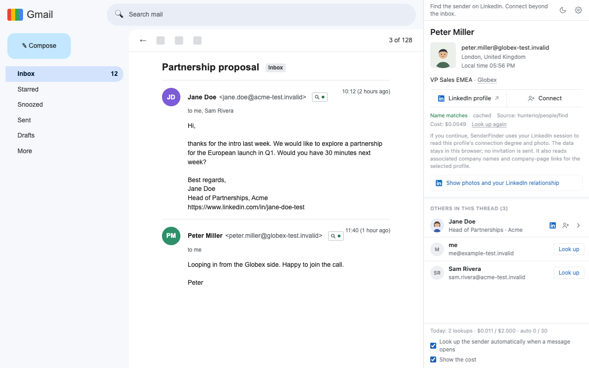

Rapportive 是什麼
Rapportive 是 Gmail 的附加元件，會把你正在寫信對象的 LinkedIn 個人檔案顯示在郵件旁邊。LinkedIn 在 2012 年收購它，之後將它關閉。
SenderFinder 做什麼
你在 Gmail 開啟一封郵件時，瀏覽器的側邊面板會顯示寄件者的姓名、職稱、公司、地點，以及對方 LinkedIn 個人檔案的連結。對話串中的其他人（其他寄件者、收件者、副本）列在下方，只有你點擊時才會查詢。郵件本身只會在寄件者旁邊多一個小標記。
網頁版 Outlook 為盡力支援。
哪裡不一樣
- 開放原始碼。以 AGPL-3.0 授權，程式碼在 GitHub 上。沒有公司可以替你把它關掉。
- 你自己的 key。個人檔案來自由你選擇的資料供應商：Monid 或 treg，Firecrawl 為選填的最後備援。擴充功能會直接從你的瀏覽器呼叫它們。
- 不需註冊。查詢會從你的瀏覽器直接傳送給你設定的供應商；查詢路徑上沒有 SenderFinder 伺服器。匿名使用統計預設開啟，可以在設定裡關閉。
- 不會被 CRM 綁住。歷史記錄留在你的瀏覽器裡。想匯出成 JSON 或 CSV，隨時都可以。
- 姓名比對。供應商回傳的姓名與郵件裡的顯示名稱不符時，結果會標上「不確定」，並同時顯示兩個姓名。
老實說明的限制
- 你需要一組供應商 key。Monid 或 treg 的一組 key 就足以開始。
- 查詢要花一點錢。一次成功查詢通常花 $0.0005 到 $0.03，多半遠低於一分錢。大多數供應商沒命中不收費，結果也會快取，同一個地址永遠不會付兩次錢。
- 花費有你自己設定的上限。會有單次上限（預設 $0.05）和每日上限（預設 $2）。只有你開啟的郵件的寄件者會自動查詢。
- 還沒有 Firefox。它在 Chrome 上執行。桌面郵件程式不支援。
- 涵蓋範圍不一。不是每個人都查得到，gmail.com 這類個人信箱地址預設會略過。面板上有按鈕可以仍要查詢。
資料去了哪裡
Rapportive 也是託管服務：個人檔案的查詢在它的伺服器上執行，並綁定你的 Rapportive 帳號。
SenderFinder 是開放原始碼的 Chrome 擴充功能。查詢請求會從你的瀏覽器直接傳送給你設定的資料供應商；查詢路徑上沒有 SenderFinder 伺服器。另有一項獨立的統計服務會收到每天一份匿名摘要，預設開啟，可在設定頁關閉。這些統計資料的控管者是 GitHub 專案 astonysh/SenderFinder 維護者 Tony Li。隱私權相關請求請聯絡 tony@senderfinder.com。
隱私權聲明會列出哪些資料會被送出、哪些會保留、哪些會丟棄。
開始使用
- 安裝擴充功能。Chrome Web Store 還沒上架前，請從原始碼安裝。
- 在 Monid 或 treg 建立一組 API key。
- 把它貼進擴充功能的設定，然後在 Gmail 開啟一封郵件。
想知道你的資料怎麼處理，請看隱私權聲明。從 Clearbit 過來？請看 Clearbit Connect 替代方案頁面。
